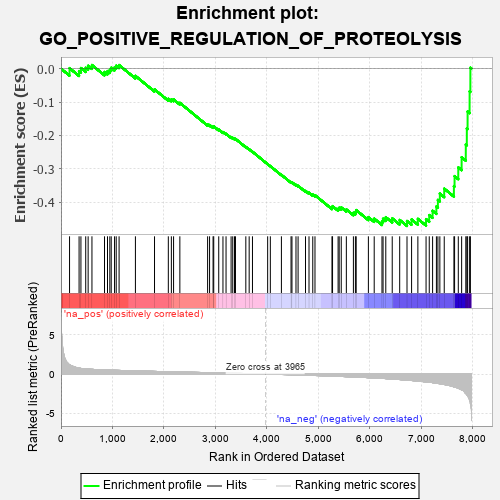
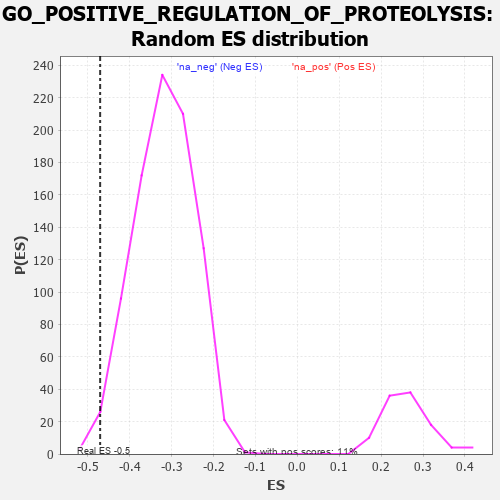

| | | Dataset | 7d |
| Phenotype | NoPhenotypeAvailable |
| Upregulated in class | na_neg |
| GeneSet | GO_POSITIVE_REGULATION_OF_PROTEOLYSIS |
| Enrichment Score (ES) | -0.470828 |
| Normalized Enrichment Score (NES) | -1.481089 |
| Nominal p-value | 0.01235955 |
| FDR q-value | 0.20747991 |
| FWER p-Value | 1.0 |
Table: GSEA Results Summary

Fig 1: Enrichment plot: GO_POSITIVE_REGULATION_OF_PROTEOLYSIS
Profile of the Running ES Score & Positions of GeneSet Members on the Rank Ordered List
| PROBE | GENE SYMBOL | GENE_TITLE | RANK IN GENE LIST | RANK METRIC SCORE | RUNNING ES | CORE ENRICHMENT | | 1 | AXIN1 | | | 166 | 1.159 | 0.0013 | No |
| 2 | GSK3A | | | 351 | 0.745 | -0.0077 | No |
| 3 | BAX | | | 387 | 0.711 | 0.0016 | No |
| 4 | CDC20 | | | 480 | 0.644 | 0.0024 | No |
| 5 | HTRA2 | | | 527 | 0.621 | 0.0085 | No |
| 6 | FBXW8 | | | 601 | 0.594 | 0.0107 | No |
| 7 | NRDC | | | 845 | 0.521 | -0.0101 | No |
| 8 | TMTC3 | | | 903 | 0.506 | -0.0075 | No |
| 9 | ADRM1 | | | 948 | 0.496 | -0.0036 | No |
| 10 | WDR48 | | | 975 | 0.489 | 0.0026 | No |
| 11 | AKT1 | | | 1040 | 0.476 | 0.0036 | No |
| 12 | AIFM1 | | | 1072 | 0.469 | 0.0087 | No |
| 13 | SRC | | | 1128 | 0.459 | 0.0106 | No |
| 14 | RBX1 | | | 1445 | 0.401 | -0.0217 | No |
| 15 | FMR1 | | | 1816 | 0.334 | -0.0622 | No |
| 16 | SART3 | | | 2084 | 0.293 | -0.0903 | No |
| 17 | PSME4 | | | 2143 | 0.285 | -0.0922 | No |
| 18 | SYK | | | 2186 | 0.278 | -0.0922 | No |
| 19 | REST | | | 2308 | 0.259 | -0.1025 | No |
| 20 | CLN6 | | | 2847 | 0.177 | -0.1673 | No |
| 21 | PDCD5 | | | 2885 | 0.169 | -0.1687 | No |
| 22 | SOCS4 | | | 2953 | 0.157 | -0.1742 | No |
| 23 | MTCH1 | | | 2966 | 0.155 | -0.1727 | No |
| 24 | KEAP1 | | | 3063 | 0.141 | -0.1821 | No |
| 25 | EDEM2 | | | 3145 | 0.131 | -0.1899 | No |
| 26 | FZR1 | | | 3205 | 0.122 | -0.1950 | No |
| 27 | SMAD3 | | | 3303 | 0.105 | -0.2053 | No |
| 28 | CHFR | | | 3335 | 0.099 | -0.2073 | No |
| 29 | SMAD7 | | | 3369 | 0.093 | -0.2097 | No |
| 30 | DDX3X | | | 3388 | 0.091 | -0.2102 | No |
| 31 | MAPK3 | | | 3589 | 0.062 | -0.2344 | No |
| 32 | FIS1 | | | 3654 | 0.051 | -0.2415 | No |
| 33 | HSF1 | | | 3718 | 0.039 | -0.2487 | No |
| 34 | RNF14 | | | 4013 | -0.010 | -0.2858 | No |
| 35 | SFRP2 | | | 4065 | -0.018 | -0.2919 | No |
| 36 | PSME3 | | | 4280 | -0.056 | -0.3179 | No |
| 37 | LRRK2 | | | 4467 | -0.087 | -0.3398 | No |
| 38 | HIP1 | | | 4485 | -0.092 | -0.3402 | No |
| 39 | BAG6 | | | 4563 | -0.108 | -0.3479 | No |
| 40 | NUB1 | | | 4604 | -0.119 | -0.3506 | No |
| 41 | FBLN1 | | | 4748 | -0.149 | -0.3659 | No |
| 42 | FBXW7 | | | 4816 | -0.161 | -0.3713 | No |
| 43 | CLU | | | 4889 | -0.174 | -0.3770 | No |
| 44 | CASP1 | | | 4932 | -0.185 | -0.3788 | No |
| 45 | PTEN | | | 5262 | -0.261 | -0.4154 | No |
| 46 | EPHA4 | | | 5273 | -0.265 | -0.4116 | No |
| 47 | GRIN1 | | | 5381 | -0.291 | -0.4196 | No |
| 48 | SUMO2 | | | 5402 | -0.296 | -0.4164 | No |
| 49 | IST1 | | | 5442 | -0.305 | -0.4155 | No |
| 50 | EDEM1 | | | 5541 | -0.331 | -0.4215 | No |
| 51 | CASP8 | | | 5678 | -0.369 | -0.4316 | No |
| 52 | CLPX | | | 5717 | -0.381 | -0.4291 | No |
| 53 | DAP | | | 5732 | -0.386 | -0.4234 | No |
| 54 | TTBK1 | | | 5969 | -0.460 | -0.4444 | No |
| 55 | PLK1 | | | 6082 | -0.500 | -0.4490 | No |
| 56 | RGN | | | 6233 | -0.547 | -0.4574 | Yes |
| 57 | TFAP4 | | | 6254 | -0.556 | -0.4493 | Yes |
| 58 | IFT57 | | | 6307 | -0.579 | -0.4447 | Yes |
| 59 | MALT1 | | | 6432 | -0.634 | -0.4482 | Yes |
| 60 | ROBO1 | | | 6577 | -0.699 | -0.4530 | Yes |
| 61 | GSK3B | | | 6719 | -0.768 | -0.4560 | Yes |
| 62 | ADAM9 | | | 6808 | -0.819 | -0.4514 | Yes |
| 63 | SNX33 | | | 6930 | -0.888 | -0.4496 | Yes |
| 64 | BBS7 | | | 7089 | -0.988 | -0.4506 | Yes |
| 65 | SPON1 | | | 7151 | -1.035 | -0.4384 | Yes |
| 66 | KLKB1 | | | 7216 | -1.090 | -0.4255 | Yes |
| 67 | ASTL | | | 7290 | -1.159 | -0.4124 | Yes |
| 68 | GRN | | | 7319 | -1.194 | -0.3929 | Yes |
| 69 | WDR35 | | | 7357 | -1.225 | -0.3740 | Yes |
| 70 | CASP2 | | | 7442 | -1.322 | -0.3592 | Yes |
| 71 | PDCD6 | | | 7630 | -1.615 | -0.3518 | Yes |
| 72 | TAF1 | | | 7643 | -1.633 | -0.3218 | Yes |
| 73 | BOK | | | 7715 | -1.817 | -0.2958 | Yes |
| 74 | ST18 | | | 7780 | -2.007 | -0.2652 | Yes |
| 75 | TRAF2 | | | 7861 | -2.481 | -0.2276 | Yes |
| 76 | FYN | | | 7881 | -2.622 | -0.1794 | Yes |
| 77 | CAV3 | | | 7896 | -2.739 | -0.1284 | Yes |
| 78 | ARRB1 | | | 7935 | -3.377 | -0.0682 | Yes |
| 79 | DAPK1 | | | 7950 | -3.767 | 0.0027 | Yes |
Table: GSEA details [plain text format]

Fig 2: GO_POSITIVE_REGULATION_OF_PROTEOLYSIS: Random ES distribution
Gene set null distribution of ES for GO_POSITIVE_REGULATION_OF_PROTEOLYSIS